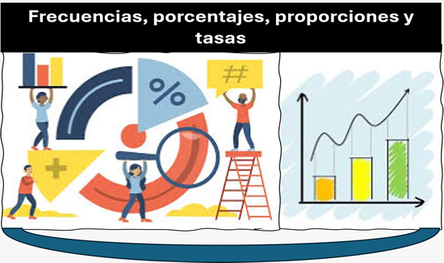

Estadística descriptiva permiten mostar informacion entendible facilitando la interpretación de la información al mostrar cuántas veces ocurre un fenómeno y cómo se distribuye en la muestra.
Indica la frecuencia el número de veces que un evento se presenta en una observaciones, mientras que el porcentaje expresa esa frecuencia en relación con el total, multiplicada por cien para facilitar su interpretación. Por su parte, la proporción representa la relación entre una parte y el total, expresada como un valor entre 0 y 1 o como fracción. Estas medidas permiten comparar resultados de manera sencilla.
Las tasas expresar ocurrencia de un evento en relación con una población y un periodo de tiempo determinado, lo que permite analizar la velocidad o riesgo con que sucede un fenómeno. En las ciencias de la salud, estas medidas son indispensables para describir indicadores epidemiológicos como tasas de mortalidad, incidencia o prevalencia, facilitando la vigilancia sanitaria en una población(Pagano & Gauvreau, 2018)
Figura 3h
Frecuencias, porcentajes, proporciones y tasas

Nota. Elaboración propia basada en Estadística (12.ª ed.). Triola, M. F. 2018. Pearson.